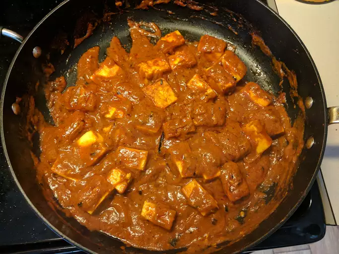

Shahi Paneer

Description
Shahi Paneer is a rich and creamy North Indian curry made with paneer (Indian cottage cheese) cooked in a luscious gravy of cream, tomatoes, and aromatic spices.
This dish is known for its royal flavors, featuring a blend of cashews and almonds that give it a luxurious texture and a subtly sweet taste.
Traditionally served at special occasions and festive meals, Shahi Paneer is a perfect vegetarian delight that pairs wonderfully with naan, roti, or rice.
Indulge in this exquisite dish to experience a taste of Indian royalty.
Ingredients
- 2 tablespoons cooking oil
- 1 large onion, thinly sliced
- 4 cloves garlic, minced
- 1 teaspoon ground cumin
- 1 teaspoon ground coriander
- ½ teaspoon ground turmeric
- ½ teaspoon Kashmiri red chili powder
- 4 tomatoes, pureed
- ½ pound paneer, cubed
- ¼ cup water
- 1 teaspoon white sugar
- salt to taste
- ¼ cup cream
- 2 tablespoons chopped fresh cilantro
Steps
- Heat the oil in a large skillet over medium heat.
- Cook the onion and garlic in the hot oil until the onions are soft and golden brown, about 5 minutes.
- Sprinkle the cumin, coriander, turmeric, and chili powder over the onion and garlic; continue cooking until the seasonings are fragrant, about 30 seconds.
- Pour the pureed tomatoes into the skillet; cook until the excess liquid evaporates and the oil separates, 3 to 5 minutes.
- Add the paneer, water, sugar, and salt to the mixture; stir gently so the paneer does not break apart.
- Cook until the paneer begins to absorb some of the liquid, about 10 minutes.
- Stir the cream into the mixture and simmer another 5 minutes.
- Garnish with cilantro to serve.